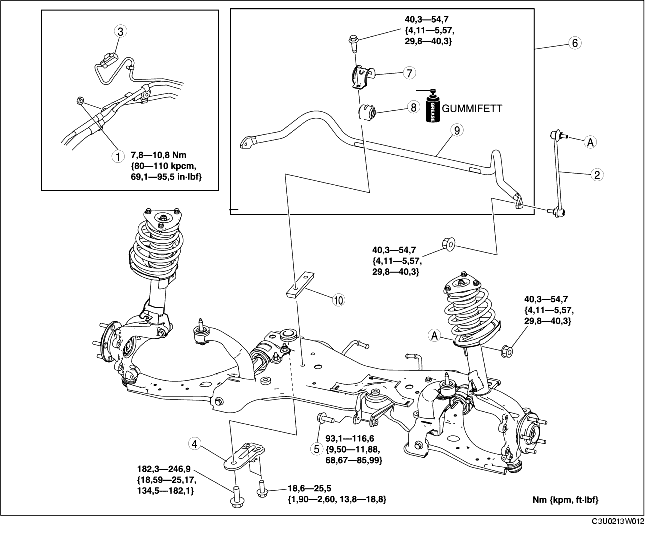

1. Demontera rattstången. (Se DEMONTERING/MONTERING AV RATT OCH RATTSTÅNG.)
2. Demontera i den ordning som anges i tabellen.
3. Montera i omvänd ordning mot demonteringen.
4. Kontrollera hjulinställningen och justera vid behov. (Se HJULINSTÄLLNING FRAM.)

.
1. Stöd den främre tvärbalken med en domkraft.
2. Demontera den främre tvärbalkens fästen.
1. Koppla ur ljuddämparfästena på röret i mitten från den främre tvärbalken.
2. Sänk långsamt den främre tvärbalken cirka 90 mm {3,5 tum} och demontera den främre krängningshämmaren.
1. Säkra flänsen på krängningshämmarens fäste med ett skruvstäd.
2. Demontera den främre krängningshämmaren.
1. Kontrollera att krängningshämmarens bussning monteras i rätt riktning.
2. Vidga öppningen på krängningshämmarens bussning 16-26 mm {0,7-1,0 tum} och montera bussningen på den främre krängningshämmaren enligt bilden.
1. Stryk på fett på krängningshämmarens bussning.
2. Montera krängningshämmarens fäste med ett skruvstäd.
1. Dra åt bultarna i den ordning bilden visar.